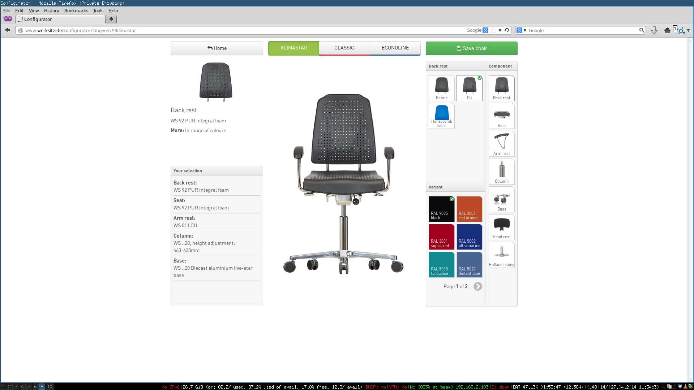
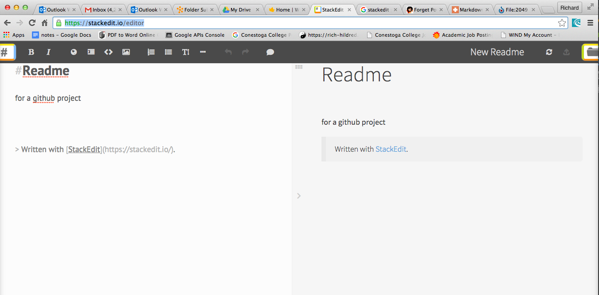

Your browser doesn't support the features required by impress.js, so you are presented with a simplified version of this presentation.
For the best experience please use the latest Chrome, Safari or Firefox browser.

Introduction to Scripting
Rich Hildred - rhildred@wlu.ca - 519-594-0900

fundamentally scripting is codification of knowledge so that others can take advantage of it.

it can be static like the scroll above
or dynamic like the chair configurator or a dashboard